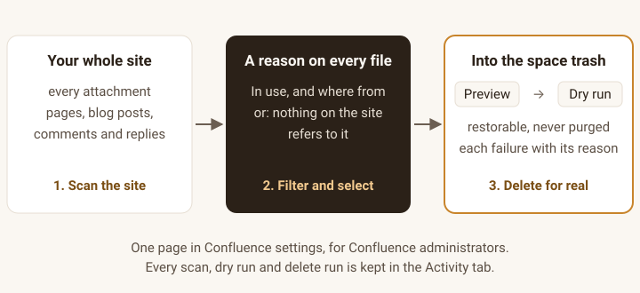

Attachkeep for Confluence
Old attachments nobody uses are eating your Confluence storage. Find the files no page, blog post, comment or diagram on your site refers to, including uploads from people who have left, and clear them out safely.
Free for up to 10 users, with every feature. From 11 users, $0.25 per user per month, billed by Atlassian.
Get it on the Atlassian Marketplace
Listing in review. This button links to the Marketplace listing once Atlassian has approved it.
For Confluence Cloud (Atlassian Forge). Not for Confluence Data Center or Server. English only. Questions first? support@ochrestack.com. Documentation and install steps

- Scan the site. Every attachment, checked against every page, blog post, comment and reply. The scan changes nothing.
- Filter and select. Each file says whether it is in use and where from, or that nothing on the site refers to it.
- Preview, dry run, then delete for real. Files go to the space trash, where they can be restored. Nothing is purged.
What it does
- Every attachment on the site in one list. Each row shows the file, its page, space, type, size, upload date, uploader, and whether the uploader's account is active, deactivated or closed. Total storage and storage per space, largest files first.
- "Unused" means unused across the whole site. A file counts as used when any page, blog post, footer comment, inline comment or reply links to it or shows it, from its own page or any other; pastes its download, image or preview link; or names it in a macro parameter, which is how draw.io and Gliffy diagrams keep theirs. A file on a page with an Attachments or Gallery macro, or named by a content property of its page (such as a cover picture), is used too.
- A reason on every row, such as referenced from a comment on "Design review", shown by the Attachments macro on its own page, named by a macro on "System overview" or no page, blog post or comment on the site references this file. Files on archived pages are listed apart, as On an archived page.
- Uploads from people who have left. Filter to uploader no longer active, and combine it with space, file type, minimum size, uploaded before a date, and unused only.
- Preview, dry run, then the space trash. The preview shows the count, megabytes and list. The dry run checks every file again (it still exists, it is on the same page, it is still unused, it isn't protected) and changes nothing. The real run moves each file to its space trash in the background, up to 1,000 files a run. One failure never stops the others, and the summary gives Confluence's reason for each.
- Your rules win. Files with your protected label (
keepby default) and every file in a space on your exclusion list can't be selected, previewed for deletion or deleted, even by a direct request to the app. - On the record. The Activity tab lists every scan, dry run and delete run: who ran it, when, the filters, the file count, megabytes and failures. Each delete run lists the files it moved, with links to their pages.
- Confluence administrators only, checked on the server against Confluence on every request. Everyone else, space administrators included, sees an explanation.
In Confluence
Each slot below takes a screenshot from a real Confluence Cloud site with realistic content. Attachkeep is a page inside Confluence's own settings, so the screenshots are taken in the Confluence UI.
What Confluence already does, and what you pay for
Confluence already lets a person with delete permission remove a file from a page's attachments, one at a time, and deleted files go to the space trash. Bulk delete of attachments is still an open suggestion (CLOUD-12500). Here the buyer pays for the site-wide list, the check that nothing on the site uses a file, the deactivated-uploader filter, the dry run, batch deletes that report each failure, and the activity log. It does not clean up drafts: Confluence keeps unpublished drafts private to their author and Forge cannot act as a deactivated user (https://developer.atlassian.com/platform/forge/security/). It cannot see links to a file from outside Confluence (email, other websites), and the listing says so.
No drafts, no links from outside Confluence, and the trash only: Attachkeep can't see unpublished drafts or links to a file from outside Confluence (email, other websites), and it moves files to the space trash, never purging them.
Finding the files nothing uses is a long-standing request: CONFCLOUD-16577 has been open since 2009.
Price
| Users on your Confluence site | Price |
|---|---|
| 1 to 10 | Free, every feature |
| 11 and more | $0.25 per user per month, for every user on the site. At 50 users: $12.50 a month, or $125 a year (annual is 10 × monthly). |
Every feature is in every tier; nothing is held back for a paid add-on. Atlassian bills the subscription, gives the standard 30-day free trial, handles renewal and cancellation, and refunds under its own 30-day policy. Ochrestack adds nothing on top.
Documentation
The step-by-step guide, with every screen, is the Attachkeep quick start.
Install
- In Confluence Cloud, open Apps > Explore more apps and search for Attachkeep (once the listing is live).
- Choose Get app. A site administrator approves the permissions below.
- Open Confluence settings (the gear) > Attachment cleanup, in the Apps section of the sidebar, and choose Scan the site.
| Permission (scope) | Used for |
|---|---|
read:attachment:confluence | Listing attachments, and reading a file and its labels just before it is deleted |
delete:attachment:confluence | Moving the files you choose to the space trash |
read:page:confluence | Reading pages and blog posts, and their content properties, to see which files they use |
read:comment:confluence | Reading footer and inline comments to see which files they use |
read:label:confluence | Finding the protected label |
read:user:confluence | The uploader's name and account status |
read:confluence-user | Checking that you are a Confluence administrator |
storage:app | Settings, scan results and the activity log, kept in Forge storage inside Atlassian |
Questions
Does scanning change anything?
No. The scan only reads. Nothing moves until you confirm a delete run, and you can run a dry run first.
Can I undo a delete?
Yes. Files go to their space trash, and a space administrator can restore them there (Space settings > Trash). Attachkeep never purges. The Activity tab lists every moved file with a link to its page.
What about draw.io and Gliffy diagrams?
These macros keep the diagram as an attachment and name it in a parameter. Any macro parameter on the site that equals a file's name, with or without its extension, keeps every file of that name. This errs toward keeping files: a panel titled "Roadmap" also keeps "Roadmap.png".
What about restricted pages?
Pages whose restrictions exclude the app aren't read. Their own files are listed as "Not checked" and never called unused. A link from such a page to a file on another page can't be seen.
How large a site does it handle?
Up to 1,000 files per delete run. On a real Confluence Cloud site, with a 20,000-file list stored in the app, each request on the Attachments tab took about 2.3 to 2.6 seconds inside the app; Forge allows 25. Larger lists, and scan times on very large sites, have not been measured yet. The progress bar shows how far a scan has got.
Are old versions of a file deleted or counted?
No. Size and upload date are those of the current version, and old versions are not touched.
Known limits
- Drafts are not cleaned up, and links from outside Confluence (email, Jira issues, other websites, bookmarks) can't be seen: such a file looks unused. That is why deletes only go to the trash.
- Whiteboards, databases and custom content are not scanned, and their attachments are not listed.
- No purge, no deleting old versions, no moving or downloading files, no scheduled clean-ups.
- A file moved to another page after the scan is skipped by the dry run and the delete run, with "run the scan again".
- Spaces are shown by their key, not their name.
How we tested
An automated suite of 83 tests runs the scan, the unused rule, the preview, the dry run, the delete run, the permission checks and the activity log against stand-ins for the Confluence API. A second suite deploys the app to a real Confluence Cloud site, seeds a space through Confluence's API, and runs a scan, a dry run and a delete run through the app's own backend: 71 of 71 checks passed. On that site it checked files referenced from another page, a blog post, a footer comment, an inline comment and a comment reply; files shown by the Attachments and Gallery macros; draw.io and Gliffy macros, including diagrams shown from another page; and pasted download, image and preview links. Each was "In use" with the expected reason. Only unreferenced, unprotected files moved, they were in their page's trash afterwards, and the dry run predicted the delete run exactly.
Not yet checked on a real site; each is part of the screenshot session in Confluence before the listing goes live: an uploader whose account has been deactivated (the filter reads Confluence's own account status, covered by the automated suite), restoring a file through the space trash screen (on the real site, the trash was checked through Confluence's API), the page in a browser (the page itself was rendered and clicked through headless), and diagrams drawn by the draw.io and Gliffy apps themselves (the test writes their macros the way those apps store them).
Privacy
Your data stays in Atlassian. Attachkeep runs on Atlassian Forge, calls only your site's Confluence API, and has no permission to reach any other server. No analytics, no telemetry. Forge storage holds only the activity log and settings (the protected label and excluded spaces). A run's record includes what that run needs: for the latest scan, the list of files it found, replaced by the next scan. See also the privacy policy.
Support
Email support@ochrestack.com with your site's approximate number of attachments, what you did, and the text Attachkeep showed. Bug reports and feature requests are welcome at the same address.